← 本轮 smoke 总览traex/DeepSeek-V4.1-Flash · 0019
vision-agent · 256×144 · 4.0 FPS · 20 帧 · 状态 complete · 输出 tokens 50283
原始任务Static locked-off single-shot with fixed frame throughout filmed with constant framerate in real-time. The scene shows a realistic scientific demonstration. The scene only contains the described setup and actions. A simple ramp made of cardboard, propped up by a blue block on a light-colored wooden table. There's a black pipe to the left of the frame that directly points towards it. The yellow tennis ball rolls straight out of the black pipe onto the ramp.
当前保存结果
已保存候选与代码修改
这里按时间展示外部捕获的候选，每份均可单独播放。保存新版本不等于完成视觉检查；下方工具证据记录实际看过的图。
候选 01 · 2026-11-08T21:00:21.214081+00:00 · 点开播放与检查图
inspection.png

transition_check.png
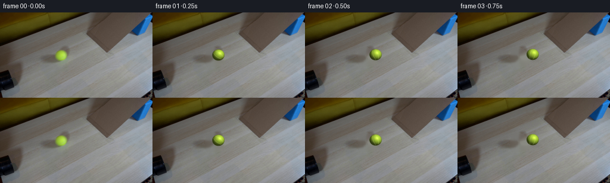
代码变化
--- 上一保存版本
+++ 本次保存版本
@@ -0,0 +1,221 @@
+from pathlib import Path
+
+import cv2
+import numpy as np
+from PIL import Image
+
+import artifact_io
+
+
+CASE_DIR = Path(__file__).resolve().parent
+WIDTH, HEIGHT = 256, 144
+N_FRAMES = 20
+FPS = 4
+
+
+def make_clean_plate(frame):
+ """Remove the opening-frame ball and its soft shadow for later compositing."""
+ mask = np.zeros((HEIGHT, WIDTH), np.uint8)
+ cv2.ellipse(mask, (102, 72), (13, 12), 0, 0, 360, 255, -1, cv2.LINE_AA)
+ cv2.ellipse(mask, (104, 82), (15, 8), -10, 0, 360, 255, -1, cv2.LINE_AA)
+ return cv2.inpaint(frame, mask, 5, cv2.INPAINT_TELEA)
+
+
+def ball_path(index):
+ """Return ball center, radius, ramp progress, and rolled distance."""
+ t = index / FPS
+ start = np.array([102.0, 72.0])
+ ramp_foot = np.array([186.0, 66.0])
+ ramp_top = np.array([176.0, 30.0])
+
+ table_vector = ramp_foot - start
+ table_length = np.linalg.norm(table_vector)
+ table_direction = table_vector / table_length
+
+ # A small rolling resistance slows the ball as it crosses the table.
+ table_speed = 33.0
+ table_accel = 3.5
+ reach_time = (table_speed - np.sqrt(table_speed**2 - 2 * table_accel * table_length)) / table_accel
+
+ if t <= reach_time:
+ table_distance = table_speed * t - 0.5 * table_accel * t**2
+ table_distance = min(table_distance, table_length)
+ center = start + table_direction * table_distance
+ radius = 10.25
+ ramp_distance = 0.0
+ rolled_distance = table_distance
+ else:
+ dt = t - reach_time
+ entry_speed = table_speed - table_accel * reach_time
+ ramp_distance = max(0.0, entry_speed * dt - 1.5 * dt**2)
+ ramp_vector = ramp_top - ramp_foot
+ ramp_length = np.linalg.norm(ramp_vector)
+ ramp_distance = min(ramp_distance, ramp_length)
+ center = ramp_foot + ramp_vector / ramp_length * ramp_distance
+ radius = 10.25 - 1.0 * ramp_distance / ramp_length
+ rolled_distance = table_length + ramp_distance
+
+ return center, radius, ramp_distance, rolled_distance
+
+
+def ramp_mask():
+ mask = np.zeros((HEIGHT, WIDTH), np.uint8)
+ polygon = np.array(
+ [[145, 0], [213, 0], [212, 70], [181, 68], [181, 34], [164, 12]],
+ np.int32,
+ )
+ cv2.fillPoly(mask, [polygon], 255, cv2.LINE_AA)
+ return mask.astype(np.float32) / 255.0
+
+
+def add_contact_shadow(base, center, radius, on_ramp):
+ shadow = base.astype(np.float32)
+ cx, cy = center
+
+ if on_ramp:
+ center_xy = (int(round(cx - 1.5)), int(round(cy + 5.5)))
+ axes = (int(round(radius * 1.02)), max(2, int(round(radius * 0.43))))
+ angle = 66.0
+ peak = 0.26
+ else:
+ center_xy = (int(round(cx + 1.0)), int(round(cy + 8.5)))
+ axes = (int(round(radius * 1.45)), max(2, int(round(radius * 0.58))))
+ angle = 10.0
+ peak = 0.24
+
+ x0 = max(0, center_xy[0] - axes[0] - 9)
+ x1 = min(WIDTH, center_xy[0] + axes[0] + 10)
+ y0 = max(0, center_xy[1] - axes[1] - 9)
+ y1 = min(HEIGHT, center_xy[1] + axes[1] + 10)
+ if x0 >= x1 or y0 >= y1:
+ return base
+
+ yy, xx = np.mgrid[y0:y1, x0:x1]
+ theta = np.deg2rad(angle)
+ dx = xx - center_xy[0]
+ dy = yy - center_xy[1]
+ u = dx * np.cos(theta) + dy * np.sin(theta)
+ v = -dx * np.sin(theta) + dy * np.cos(theta)
+ ellipse = (u / axes[0]) ** 2 + (v / axes[1]) ** 2
+ alpha = peak * np.exp(-1.75 * ellipse)
+ alpha *= cv2.GaussianBlur((ellipse <= 2.2).astype(np.float32), (0, 0), 2.8)[: alpha.shape[0], : alpha.shape[1]]
+ if on_ramp:
+ alpha *= ramp_mask()[y0:y1, x0:x1]
+
+ patch = shadow[y0:y1, x0:x1]
+ tint = np.array([0.76, 0.73, 0.69], np.float32)
+ patch[:] = patch * (1.0 - alpha[..., None]) + patch * tint * alpha[..., None]
+ return np.clip(shadow, 0, 255).astype(np.uint8)
+
+
+def render_ball(center, radius, roll_angle):
+ """Render an anti-aliased, shaded tennis ball at subpixel position."""
+ supersample = 4
+ rx = radius
+ ry = radius * 0.92
+ pad = 4
+ x0 = max(0, int(np.floor(center[0] - rx - pad)))
+ x1 = min(WIDTH, int(np.ceil(center[0] + rx + pad)))
+ y0 = max(0, int(np.floor(center[1] - ry - pad)))
+ y1 = min(HEIGHT, int(np.ceil(center[1] + ry + pad)))
+ width, height = x1 - x0, y1 - y0
+
+ yy, xx = np.mgrid[0 : height * supersample, 0 : width * supersample]
+ xx = (xx + 0.5) / supersample + x0 - 0.5
+ yy = (yy + 0.5) / supersample + y0 - 0.5
+ nx = (xx - center[0]) / rx
+ ny = (yy - center[1]) / ry
+ radial_sq = nx**2 + ny**2
+ inside = radial_sq <= 1.0
+ nz = np.sqrt(np.clip(1.0 - radial_sq, 0.0, 1.0))
+
+ # Camera-space light from the upper right; the low ambient keeps the rim green.
+ light = np.array([0.42, -0.57, 0.71], np.float32)
+ light /= np.linalg.norm(light)
+ diffuse = np.clip(nx * light[0] + ny * light[1] + nz * light[2], 0.0, 1.0)
+ half_light = light + np.array([0.0, 0.0, 1.0], np.float32)
+ half_light /= np.linalg.norm(half_light)
+ specular = np.clip(nx * half_light[0] + ny * half_light[1] + nz * half_light[2], 0.0, 1.0) ** 26
+
+ # Rotate the fuzz/seam pattern about the viewing axis as the ball rolls.
+ ca, sa = np.cos(roll_angle), np.sin(roll_angle)
+ tx = ca * nx + sa * ny
+ ty = -sa * nx + ca * ny
+
+ base_rgb = np.array([181.0, 220.0, 62.0], np.float32)
+ illumination = 0.30 + 0.76 * diffuse
+ rgb = base_rgb[None, None, :] * illumination[..., None]
+
+ # A fine, non-repeating surface grain suggests the tennis-ball nap.
+ grain = (
+ 1.8 * np.sin(79.0 * tx + 31.0 * ty)
+ + 1.2 * np.sin(137.0 * ty - 43.0 * tx + 1.3)
+ + 0.8 * np.sin(211.0 * (tx + ty))
+ )
+ rgb += grain[..., None] * np.array([0.80, 1.0, 0.55], np.float32)
+
+ # Two subdued, curved tennis seams. They stay faint at this small screen size.
+ seam_1 = np.abs(ty - (0.30 + 0.12 * np.cos(2.35 * tx + 0.25)))
+ seam_2 = np.abs(ty - (-0.29 - 0.11 * np.cos(2.15 * tx - 0.35)))
+ seam_distance = np.minimum(seam_1, seam_2)
+ seam_alpha = np.clip((0.055 - seam_distance) / 0.055, 0.0, 1.0) * 0.42
+ seam_alpha *= np.clip((nz - 0.20) / 0.30, 0.0, 1.0)
+ seam_rgb = np.array([216.0, 229.0, 137.0], np.float32)
+ rgb = rgb * (1.0 - seam_alpha[..., None]) + seam_rgb[None, None, :] * seam_alpha[..., None]
+
+ rgb += specular[..., None] * np.array([42.0, 35.0, 20.0], np.float32)
+
+ # Darken the extreme silhouette and gently lift the lit upper hemisphere.
+ rim = np.clip((0.88 - nz) / 0.88, 0.0, 1.0) * 0.22
+ rgb *= (1.0 - rim[..., None])
+ rgb += np.clip(diffuse - 0.35, 0.0, 1.0)[..., None] * np.array([7.0, 6.0, 2.0], np.float32)
+
+ rgba = np.zeros((height * supersample, width * supersample, 4), np.float32)
+ rgba[..., :3] = np.clip(rgb, 0.0, 255.0)
+ rgba[..., 3] = inside.astype(np.float32) * 255.0
+
+ down = cv2.resize(
+ rgba,
+ (width, height),
+ interpolation=cv2.INTER_AREA,
+ )
+ return down, (x0, y0, x1, y1)
+
+
+def composite_ball(frame, center, radius, rolled_distance, on_ramp):
+ angle = rolled_distance / radius * 0.72 + 0.18
+ ball, (x0, y0, x1, y1) = render_ball(center, radius, angle)
+ alpha = ball[..., 3:4] / 255.0
+ dst = frame[y0:y1, x0:x1].astype(np.float32)
+ src = ball[..., :3]
+ frame[y0:y1, x0:x1] = np.clip(dst * (1.0 - alpha) + src * alpha, 0.0, 255.0).astype(np.uint8)
+ return frame
+
+
+def generate():
+ first = np.asarray(Image.open(CASE_DIR / "first_frame.png").convert("RGB"))
+ if first.shape != (HEIGHT, WIDTH, 3):
+ raise ValueError(f"Unexpected first-frame shape: {first.shape}")
+
+ clean = make_clean_plate(first)
+ frames = []
+
+ for index in range(N_FRAMES):
+ if index == 0:
+ frames.append(first.copy())
+ continue
+
+ center, radius, ramp_distance, rolled_distance = ball_path(index)
+ on_ramp = ramp_distance > 0.0
+ frame = clean.copy()
+ frame = add_contact_shadow(frame, center, radius, on_ramp)
+ frame = composite_ball(frame, center, radius, rolled_distance, on_ramp)
+ frames.append(frame)
+
+ frames = np.asarray(frames, dtype=np.uint8)
+ artifact_io.save(frames, CASE_DIR)
+ return frames
+
+
+if __name__ == "__main__":
+ generate()
候选 02 · 2026-11-08T21:01:14.487453+00:00 · 点开播放与检查图
inspection.png

transition_check.png

代码变化
--- 上一保存版本
+++ 本次保存版本
@@ -73,15 +73,15 @@
cx, cy = center
if on_ramp:
- center_xy = (int(round(cx - 1.5)), int(round(cy + 5.5)))
- axes = (int(round(radius * 1.02)), max(2, int(round(radius * 0.43))))
+ center_xy = (int(round(cx - 1.0)), int(round(cy + 7.0)))
+ axes = (int(round(radius * 0.82)), max(2, int(round(radius * 0.34))))
angle = 66.0
- peak = 0.26
+ peak = 0.16
else:
center_xy = (int(round(cx + 1.0)), int(round(cy + 8.5)))
- axes = (int(round(radius * 1.45)), max(2, int(round(radius * 0.58))))
+ axes = (int(round(radius * 1.35)), max(2, int(round(radius * 0.52))))
angle = 10.0
- peak = 0.24
+ peak = 0.13
x0 = max(0, center_xy[0] - axes[0] - 9)
x1 = min(WIDTH, center_xy[0] + axes[0] + 10)
@@ -97,14 +97,15 @@
u = dx * np.cos(theta) + dy * np.sin(theta)
v = -dx * np.sin(theta) + dy * np.cos(theta)
ellipse = (u / axes[0]) ** 2 + (v / axes[1]) ** 2
- alpha = peak * np.exp(-1.75 * ellipse)
- alpha *= cv2.GaussianBlur((ellipse <= 2.2).astype(np.float32), (0, 0), 2.8)[: alpha.shape[0], : alpha.shape[1]]
+ alpha = peak * np.exp(-2.2 * ellipse)
+ alpha *= np.clip((2.4 - ellipse) / 1.4, 0.0, 1.0)
+ alpha = cv2.GaussianBlur(alpha, (0, 0), 1.15)
if on_ramp:
alpha *= ramp_mask()[y0:y1, x0:x1]
patch = shadow[y0:y1, x0:x1]
- tint = np.array([0.76, 0.73, 0.69], np.float32)
- patch[:] = patch * (1.0 - alpha[..., None]) + patch * tint * alpha[..., None]
+ tint = np.array([0.86, 0.82, 0.77], np.float32)
+ patch *= 1.0 - alpha[..., None] * (1.0 - tint)
return np.clip(shadow, 0, 255).astype(np.uint8)
@@ -143,7 +144,7 @@
ty = -sa * nx + ca * ny
base_rgb = np.array([181.0, 220.0, 62.0], np.float32)
- illumination = 0.30 + 0.76 * diffuse
+ illumination = 0.48 + 0.57 * diffuse
rgb = base_rgb[None, None, :] * illumination[..., None]
# A fine, non-repeating surface grain suggests the tennis-ball nap.
@@ -158,7 +159,7 @@
seam_1 = np.abs(ty - (0.30 + 0.12 * np.cos(2.35 * tx + 0.25)))
seam_2 = np.abs(ty - (-0.29 - 0.11 * np.cos(2.15 * tx - 0.35)))
seam_distance = np.minimum(seam_1, seam_2)
- seam_alpha = np.clip((0.055 - seam_distance) / 0.055, 0.0, 1.0) * 0.42
+ seam_alpha = np.clip((0.055 - seam_distance) / 0.055, 0.0, 1.0) * 0.20
seam_alpha *= np.clip((nz - 0.20) / 0.30, 0.0, 1.0)
seam_rgb = np.array([216.0, 229.0, 137.0], np.float32)
rgb = rgb * (1.0 - seam_alpha[..., None]) + seam_rgb[None, None, :] * seam_alpha[..., None]
@@ -166,7 +167,7 @@
rgb += specular[..., None] * np.array([42.0, 35.0, 20.0], np.float32)
# Darken the extreme silhouette and gently lift the lit upper hemisphere.
- rim = np.clip((0.88 - nz) / 0.88, 0.0, 1.0) * 0.22
+ rim = np.clip((0.88 - nz) / 0.88, 0.0, 1.0) * 0.15
rgb *= (1.0 - rim[..., None])
rgb += np.clip(diffuse - 0.35, 0.0, 1.0)[..., None] * np.array([7.0, 6.0, 2.0], np.float32)
候选 03 · 2026-11-08T21:01:16.321679+00:00 · 点开播放与检查图
inspection.png

transition_check.png
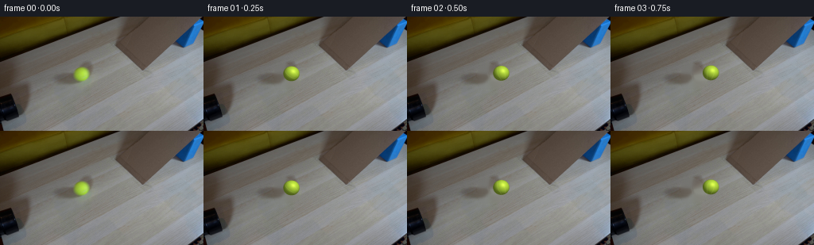
代码变化
代码未变化；重新保存了产物。
可观测工具行为
命令 1 · 2026-11-08T20:54:59.224524+00:00/bin/bash -c "pwd && rg --files -g '"'!*.mp4'"' -g '"'!*.mov'"' -g '"'!*.webm'"'"
exit 0 命令 2 · 2026-11-08T20:54:59.429220+00:00/bin/bash -c "sed -n '1,240p' GENERATION_RULES.md"
exit 0 命令 3 · 2026-11-08T20:54:59.651093+00:00/bin/bash -c "sed -n '1,240p' prompt.txt"
exit 0 命令 4 · 2026-11-08T20:54:59.843517+00:00/bin/bash -c "file first_frame.png && identify first_frame.png 2>/dev/null || true && find . -maxdepth 2 -type f -printf '%p %s bytes\\n' | sort"
exit 0 命令 5 · 2026-11-08T20:55:10.101366+00:00/bin/bash -c "sed -n '1,260p' artifact_io.py"
exit 0 命令 6 · 2026-11-08T20:55:10.387264+00:00/bin/bash -c "sed -n '1,260p' player_template.html"
exit 0 命令 7 · 2026-11-08T20:55:10.602717+00:00/bin/bash -c "python - <<'PY'
from PIL import Image
im=Image.open('first_frame.png')
print(im.size, im.mode)
print(im.getpixel((100,70)), im.getpixel((20,120)), im.getpixel((200,40)))
PY"exit 0 命令 8 · 2026-11-08T20:55:26.530174+00:00/bin/bash -c "python - <<'PY'
from PIL import Image
im=Image.open('first_frame.png')
im.crop((0,40,200,144)).resize((800,416)).save('.tmp/crop.png')
PY"exit 0 命令 9 · 2026-11-08T20:55:45.780045+00:00/bin/bash -c "python - <<'PY'
try:
import cv2; print('cv2', cv2.__version__)
except Exception as e: print('no cv2',e)
try:
import scipy; print('scipy', scipy.__version__)
except Exception as e: print('no scipy',e)
try:
import imageio; print('imageio', imageio.__version__)
except Exception as e: print('no imageio',e)
PY"exit 0 命令 10 · 2026-11-08T20:56:17.226156+00:00/bin/bash -c "python - <<'PY'
from PIL import Image
im=Image.open('first_frame.png')
im.crop((82,50,130,94)).resize((480,440), Image.Resampling.NEAREST).save('.tmp/ball_zoom.png')
PY"exit 0 命令 11 · 2026-11-08T20:56:51.594863+00:00/bin/bash -c "python - <<'PY'
from PIL import Image
im=Image.open('first_frame.png')
im.crop((140,0,256,85)).resize((696,510), Image.Resampling.NEAREST).save('.tmp/ramp_zoom.png')
PY"exit 0 命令 12 · 2026-11-08T20:57:08.259923+00:00/bin/bash -c "python - <<'PY'
import cv2, numpy as np
im=cv2.imread('first_frame.png')
hsv=cv2.cvtColor(im,cv2.COLOR_BGR2HSV)
for lo,hi in [((20,100,70),(50,255,255)),((25,120,80),(45,255,255)),((28,80,70),(50,255,255))]:
m=cv2.inRange(hsv,np.array(lo),np.array(hi))
ys,xs=np.where(m>0)
print(lo, len(xs), (xs.min(),ys.min(),xs.max(),ys.max()) if len(xs) else None)
# print hsv stats around ball
roi=hsv[55:84,85:116]
vals=roi.reshape(-1,3)
print('hsv percentiles',np.percentile(vals,[10,25,50,75,90],axis=0))
PY"exit 0 命令 13 · 2026-11-08T20:57:14.237523+00:00/bin/bash -c "python - <<'PY'
import cv2,numpy as np
im=cv2.imread('first_frame.png')
hsv=cv2.cvtColor(im,cv2.COLOR_BGR2HSV)
# ball in x80:120 y50:90, use pixels with h 28-50 s>120 v>70
m=np.zeros(im.shape[:2],np.uint8)
m[50:90,80:120]=cv2.inRange(hsv[50:90,80:120],np.array((28,120,70)),np.array((50,255,255)))
ys,xs=np.where(m>0)
print('bbox',xs.min(),ys.min(),xs.max(),ys.max(),'n',len(xs),'centroid',xs.mean(),ys.mean())
# find silhouette approximate by bright region around it manually based on green-ish distance
print('pixels center/edges')
for y in range(55,84,3):
row=[]
for x in range(86,114,3):
b,g,r=im[y,x]; row.append(f'{r:3},{g:3},{b:3}')
print(y,' '.join(row))
PY"exit 0 命令 14 · 2026-11-08T20:57:19.146395+00:00/bin/bash -c "python - <<'PY'
import cv2,numpy as np
im=cv2.imread('first_frame.png')[:,:,::-1].astype(float)
# avg row color medians across left table away from ball
for x0,x1,y0,y1 in [(120,180,70,100),(90,130,40,60),(20,80,100,140),(120,160,100,140)]:
roi=im[y0:y1,x0:x1]
print((x0,x1,y0,y1),np.median(roi.reshape(-1,3),axis=0),np.percentile(roi.reshape(-1,3),[10,90],axis=0))
PY"exit 0 命令 15 · 2026-11-08T20:57:46.789864+00:00/bin/bash -c "python - <<'PY'
import cv2, numpy as np
im=cv2.imread('first_frame.png')
mask=np.zeros(im.shape[:2],np.uint8)
cv2.circle(mask,(102,72),12,255,-1,lineType=cv2.LINE_AA)
cv2.ellipse(mask,(112,82),(16,11),-25,0,360,255,-1,lineType=cv2.LINE_AA)
mask=cv2.GaussianBlur(mask,(5,5),1.1)
out=cv2.inpaint(im,mask,5,cv2.INPAINT_TELEA)
cv2.imwrite('.tmp/base_inpaint.png',out)
cv2.imwrite('.tmp/mask.png',mask)
cv2.imwrite('.tmp/base_crop.png',cv2.resize(out[45:105,75:145],None,fx=6,fy=6,interpolation=cv2.INTER_NEAREST))
PY"exit 0 命令 16 · 2026-11-08T20:57:54.458200+00:00/bin/bash -c "python - <<'PY'
from PIL import Image
im=Image.open('first_frame.png')
im.crop((0,90,256,144)).resize((1024,216), Image.Resampling.NEAREST).save('.tmp/bottom_zoom.png')
PY"exit 0 命令 17 · 2026-11-08T20:58:02.595502+00:00/bin/bash -c "python - <<'PY'
import cv2,numpy as np
im=cv2.imread('first_frame.png')
# dark pipe silhouette mask by saturation low and value low around x0:40 y100:144
hsv=cv2.cvtColor(im,cv2.COLOR_BGR2HSV)
for y in range(100,144,4):
seg=[]
for x in range(0,42,4):
b,g,r=im[y,x]; h,s,v=hsv[y,x]; seg.append('X' if v<55 else 'x' if v<80 else '.')
print(f'{y:3}', ''.join(seg))
PY"exit 0 命令 18 · 2026-11-08T20:58:07.947309+00:00/bin/bash -c "python - <<'PY'
import cv2, numpy as np
im=cv2.imread('first_frame.png')
# visual pipe crop enlarged
cv2.imwrite('.tmp/pipe_crop.png', cv2.resize(im[85:144,0:60],None,fx=8,fy=8,interpolation=cv2.INTER_NEAREST))
PY"exit 0 命令 19 · 2026-11-08T20:58:15.322258+00:00/bin/bash -c "python - <<'PY'
from PIL import Image
im=Image.open('first_frame.png')
im.crop((70,50,145,100)).resize((900,600), Image.Resampling.NEAREST).save('.tmp/ball_shadow.png')
PY"exit 0 命令 20 · 2026-11-08T20:58:33.996120+00:00/bin/bash -c "python - <<'PY'
from PIL import Image
im=Image.open('first_frame.png')
im.crop((0,0,150,75)).resize((900,450), Image.Resampling.NEAREST).save('.tmp/left_top.png')
PY"exit 0 命令 21 · 2026-11-08T20:58:41.164465+00:00/bin/bash -c "python - <<'PY'
from PIL import Image
im=Image.open('first_frame.png')
im.crop((185,0,256,85)).resize((568,680), Image.Resampling.NEAREST).save('.tmp/blue_ramp.png')
PY"exit 0 命令 22 · 2026-11-08T20:58:48.504207+00:00/bin/bash -c "python - <<'PY'
from PIL import Image
im=Image.open('first_frame.png')
im.crop((145,0,235,85)).resize((540,510), Image.Resampling.NEAREST).save('.tmp/cardboard.png')
PY"exit 0 命令 23 · 2026-11-08T21:00:19.836279+00:00/bin/bash -c 'python generate.py'
exit 0 命令 24 · 2026-11-08T21:00:31.176996+00:00/bin/bash -c "python - <<'PY'
from PIL import Image
for i in [1,4,7,10,13,16,19]:
im=Image.open(f'frames/{i:02d}.png')
im.crop((70,40,220,105)).resize((900,390),Image.Resampling.NEAREST).save(f'.tmp/f{i:02d}.png')
PY"exit 0 命令 25 · 2026-11-08T21:00:47.067629+00:00/bin/bash -c "python - <<'PY'
from generate import ball_path,ramp_mask
import numpy as np
for i in range(20):
c,r,d,rd=ball_path(i); print(i, np.round(c,2),round(r,2),round(d,2), int(ramp_mask()[int(c[1]),int(c[0])]*255))
PY"
exit 0 命令 26 · 2026-11-08T21:01:01.381139+00:00/bin/bash -c "python - <<'PY'
from PIL import Image
import numpy as np
x=np.asarray(Image.open('first_frame.png'))
y=np.asarray(Image.open('frames/00.png'))
print('identical',np.array_equal(x,y),'maxdiff',np.abs(x.astype(int)-y.astype(int)).max())
PY"exit 0 命令 27 · 2026-11-08T21:01:13.982551+00:00/bin/bash -c 'python generate.py'
exit 0 命令 28 · 2026-11-08T21:01:22.849054+00:00/bin/bash -c "python - <<'PY'
from PIL import Image
for i in [10,12,13,14,15,16,17,18,19]:
im=Image.open(f'frames/{i:02d}.png')
im.crop((145,15,215,80)).resize((560,520),Image.Resampling.NEAREST).save(f'.tmp/ramp_{i:02d}.png')
PY"exit 0 命令 29 · 2026-11-08T21:01:37.546978+00:00/bin/bash -c "python - <<'PY'
import cv2, numpy as np
im=cv2.imread('first_frame.png')
# ramp polygon edge samples around y rows: print intensity transitions x 170..220
for y in [0,5,10,15,20,25,30,35,40,45,50,55,60,65,68,70,72,75]:
vals=[]
for x in range(170,221):
b,g,r=im[y,x]
if r>g+4 and g>b+1 and r<190:
vals.append(x)
# groups
groups=[]
for x in vals:
if not groups or x>groups[-1][-1]+1: groups.append([x])
else: groups[-1].append(x)
print(y, [(a[0],a[-1]) for a in groups])
PY"exit 0 命令 30 · 2026-11-08T21:02:07.188398+00:00/bin/bash -c "python - <<'PY'
from PIL import Image
import numpy as np
from generate import make_clean_plate
im=np.asarray(Image.open('first_frame.png').convert('RGB'))
cl=make_clean_plate(im)
d=np.abs(im.astype(int)-cl.astype(int)).max(2)
ys,xs=np.where(d>8)
print(xs.min(),xs.max(),ys.min(),ys.max())
for y in range(55,88):
row=''
for x in range(85,122):
v=d[y,x]
row += '#' if v>25 else '+' if v>12 else '.' if v>5 else ' '
print(f'{y:3}',row)
PY"exit 0 命令 31 · 2026-11-08T21:02:12.007347+00:00/bin/bash -c "python - <<'PY'
import cv2,numpy as np
im=cv2.imread('first_frame.png')
# print table colors under likely new shadow positions, avoid geometry
for x,y in [(130,80),(145,78),(160,77),(175,76),(185,75),(185,55),(182,45)]:
print(x,y,im[y,x][::-1])
PY"exit 0 命令 32 · 2026-11-08T21:02:16.247017+00:00/bin/bash -c "python - <<'PY'
from PIL import Image
im=Image.open('frames/19.png')
im.crop((160,15,215,65)).resize((660,600),Image.Resampling.NEAREST).save('.tmp/top19.png')
PY"exit 0 命令 33 · 2026-11-08T21:02:24.353580+00:00/bin/bash -c "python - <<'PY'
import cv2,numpy as np
im=cv2.imread('frames/19.png')[:,:,::-1]
for y in range(25,58,2):
seg=''
for x in range(165,210,2):
r,g,b=im[y,x]
seg += 'G' if g>r*1.05 and g>b*1.2 else 'R' if r>g+6 and g>b else '.' if max(r,g,b)>150 else ' '
print(f'{y:3}',seg)
PY"exit 0 命令 34 · 2026-11-08T21:02:32.870817+00:00/bin/bash -c "python - <<'PY'
from PIL import Image
for i in [1,2,3,12,13,14,15,16]:
im=Image.open(f'frames/{i:02d}.png')
im.crop((80,25,205,95)).resize((750,420),Image.Resampling.NEAREST).save(f'.tmp/check_{i:02d}.png')
PY"exit 0 命令 35 · 2026-11-08T21:02:41.082439+00:00/bin/bash -c "python - <<'PY'
from PIL import Image
import numpy as np
im=np.asarray(Image.open('frames/01.png').convert('RGB')).astype(int)
for y in range(60,91):
row=''
for x in range(90,140):
r,g,b=im[y,x]
if g>r*1.1 and g>b*1.3: row+='G'
elif r<105 and g<105 and b<105: row+='#'
elif r<125: row+='+'
else: row+=' '
print(f'{y:3}',row)
PY"exit 0 命令 36 · 2026-11-08T21:02:52.728035+00:00/bin/bash -c "python - <<'PY'
from PIL import Image
import numpy as np
im=np.asarray(Image.open('first_frame.png').convert('RGB'))
# sample clean ball colors and current ball colors at corresponding center offset frame 0/1
for dx,dy in [(0,-7),(0,0),(6,-3),(-6,3),(0,7),(6,6),(-6,-6)]:
print(dx,dy,'orig',im[72+dy,102+dx], 'new',np.asarray(Image.open('frames/01.png'))[71+dy,110+dx])
PY"exit 0 命令 37 · 2026-11-08T21:02:58.276033+00:00/bin/bash -c "python - <<'PY'
from PIL import Image
import numpy as np
from generate import ball_path,render_ball
for i in [1,5,10,13,17,19]:
c,r,d,rd=ball_path(i); ball,(x0,y0,x1,y1)=render_ball(c,r,rd/r*.72+.18)
print(i,'c',c,'box',x0,y0,x1,y1,'alpha',ball[...,3].sum()/255,'bbox',end=' ')
a=ball[...,3]>8; ys,xs=np.where(a); print((xs.min()+x0,xs.max()+x0,ys.min()+y0,ys.max()+y0))
PY"
exit 0 命令 38 · 2026-11-08T21:03:03.919185+00:00/bin/bash -c "python - <<'PY'
from PIL import Image
im=Image.open('frames/01.png')
im.crop((95,55,125,85)).resize((600,600),Image.Resampling.NEAREST).save('.tmp/b01.png')
im2=Image.open('first_frame.png')
im2.crop((87,57,117,87)).resize((600,600),Image.Resampling.NEAREST).save('.tmp/b00.png')
PY"exit 0 命令 39 · 2026-11-08T21:03:16.473041+00:00/bin/bash -c "python - <<'PY'
from PIL import Image
import numpy as np
from generate import render_ball
ball,_=render_ball((110.12,71.42),10.25,1.0)
Image.fromarray(ball[...,:3].astype(np.uint8)).resize((600,600),Image.Resampling.NEAREST).save('.tmp/braw.png')
PY"exit 0 命令 40 · 2026-11-08T21:03:24.667597+00:00/bin/bash -c "python - <<'PY'
import cv2, numpy as np
from PIL import Image
im=np.asarray(Image.open('first_frame.png').convert('RGB'))
g=im.astype(float).mean(2)
# list left edge by row where brightens after x70
for y in range(60,88,2):
vals=[]
for x in range(70,130):
if g[y,x]>120: vals.append(x)
print(y, min(vals) if vals else None)
PY"exit 0 命令 41 · 2026-11-08T21:03:29.711020+00:00/bin/bash -c "python - <<'PY'
from PIL import Image
import numpy as np
from generate import make_clean_plate
im=np.asarray(Image.open('first_frame.png').convert('RGB'))
cl=make_clean_plate(im)
Image.fromarray(cl).resize((1024,576),Image.Resampling.NEAREST).save('.tmp/clean_full.png')
PY"exit 0 命令 42 · 2026-11-08T21:03:37.998786+00:00/bin/bash -c "python - <<'PY'
from PIL import Image
im=Image.open('first_frame.png')
im.crop((70,35,145,95)).resize((900,720),Image.Resampling.NEAREST).save('.tmp/opening_ball.png')
PY"exit 0 命令 43 · 2026-11-08T21:03:46.095130+00:00/bin/bash -c "python - <<'PY'
from PIL import Image
import numpy as np
from generate import ball_path
im=np.asarray(Image.open('frames/01.png').convert('RGB'))
for y in range(58,85):
line=''
for x in range(95,127):
r,g,b=im[y,x]
line += 'G' if g>r+20 and g>b+25 else 'g' if g>r+8 and g>b+15 else '+' if int(r)+int(g)+int(b)<300 else ' '
print(f'{y:3}',line)
PY"exit 0 命令 44 · 2026-11-08T21:03:52.180786+00:00/bin/bash -c "python - <<'PY'
import cv2, numpy as np
from PIL import Image
im=np.asarray(Image.open('first_frame.png').convert('RGB'))
# test geometry: derive rough ball silhouette mask via green excess within bbox
r,g,b=[im[:,:,i].astype(int) for i in range(3)]
mask=(g>r+8)&(g>b+20)&(np.indices(g.shape)[1]>85)&(np.indices(g.shape)[1]<120)&(np.indices(g.shape)[0]>55)&(np.indices(g.shape)[0]<90)
ys,xs=np.where(mask)
print('n',len(xs),'bbox',xs.min(),xs.max(),ys.min(),ys.max(),'mean',xs.mean(),ys.mean())
# distribution left right top bottom extents by rows
for y in range(58,86,2):
xs2=np.where(mask[y])[0]
print(y,(xs2.min(),xs2.max()) if len(xs2) else None)
PY"exit 0 命令 45 · 2026-11-08T21:03:57.976590+00:00/bin/bash -c "python - <<'PY'
from PIL import Image
import numpy as np
im=np.asarray(Image.open('first_frame.png').convert('RGB')).astype(int)
r,g,b=im[:,:,0],im[:,:,1],im[:,:,2]
mask=(g>r+8)&(g>b+20)
ys,xs=np.where(mask)
print(xs.min(),xs.max(),ys.min(),ys.max())
for y in range(60,86):
xs2=np.where(mask[y])[0]
print(y,(xs2.min(),xs2.max()) if len(xs2) else None)
PY"exit 0 视觉工具实际返回图片 1

视觉工具实际返回图片 2
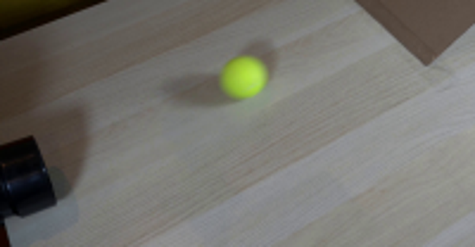
视觉工具实际返回图片 3
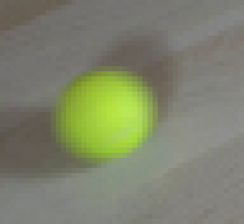
视觉工具实际返回图片 4
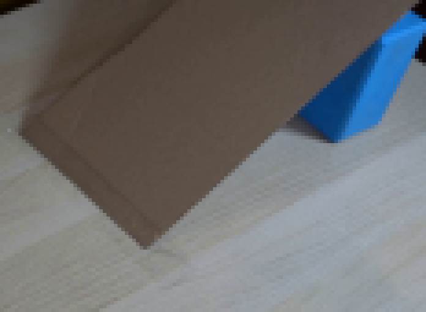
视觉工具实际返回图片 5
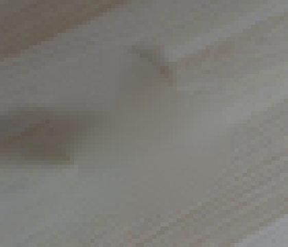
视觉工具实际返回图片 6
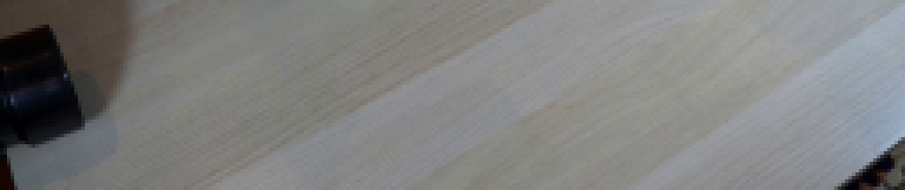
视觉工具实际返回图片 7
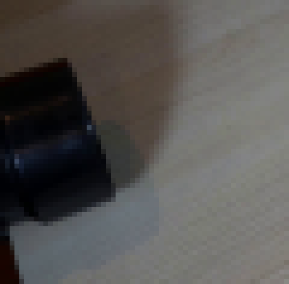
视觉工具实际返回图片 8
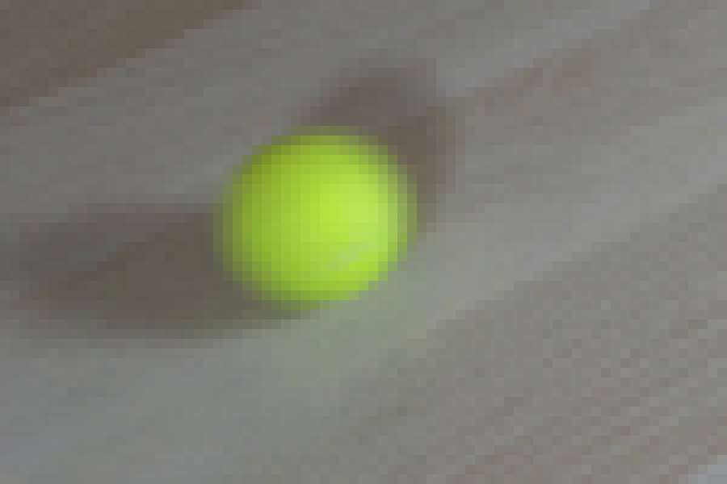
视觉工具实际返回图片 9
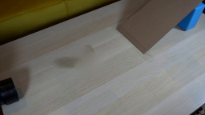
视觉工具实际返回图片 10
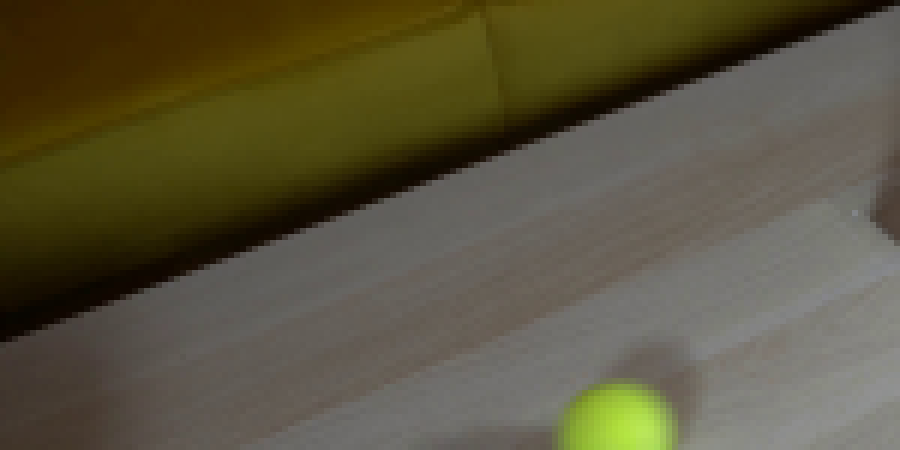
视觉工具实际返回图片 11
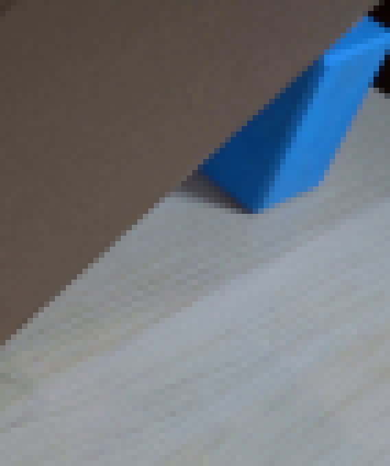
视觉工具实际返回图片 12
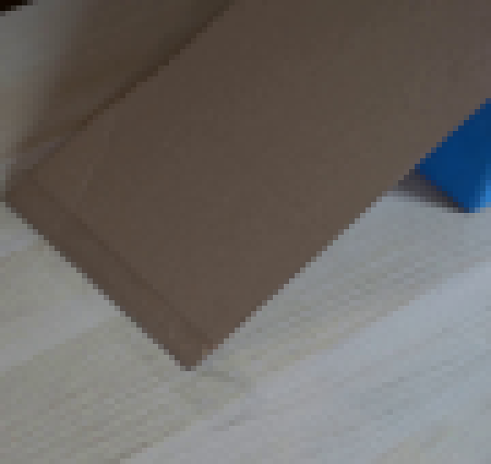
视觉工具实际返回图片 13
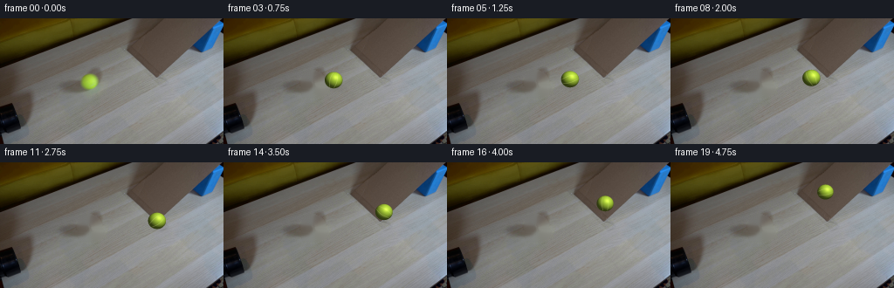
视觉工具实际返回图片 14
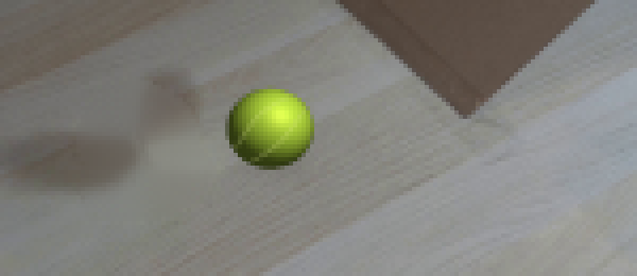
视觉工具实际返回图片 15
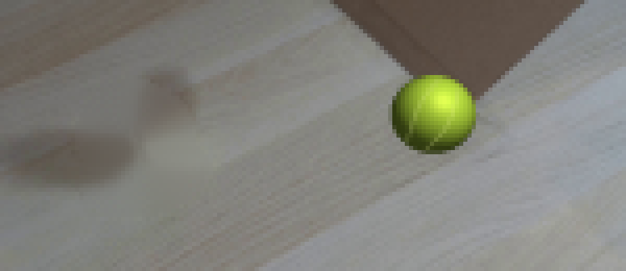
视觉工具实际返回图片 16
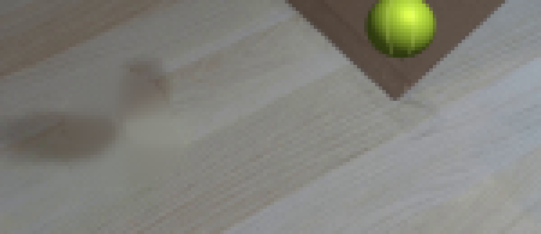
视觉工具实际返回图片 17
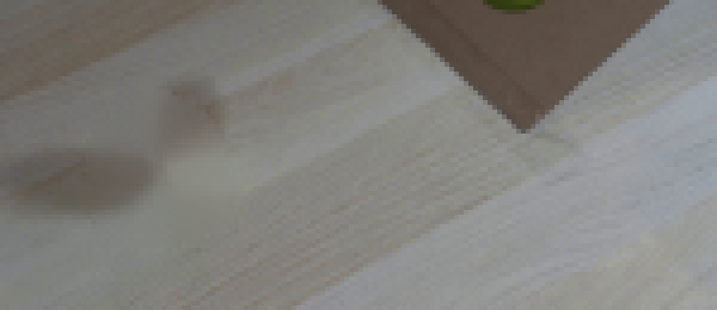
视觉工具实际返回图片 18
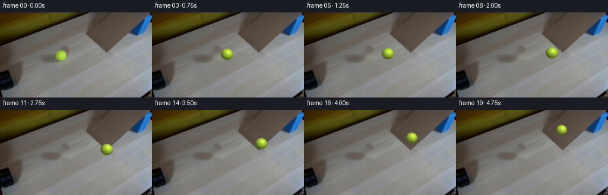
视觉工具实际返回图片 19
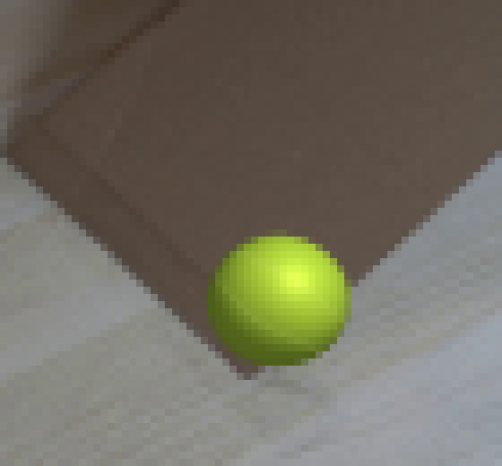
视觉工具实际返回图片 20
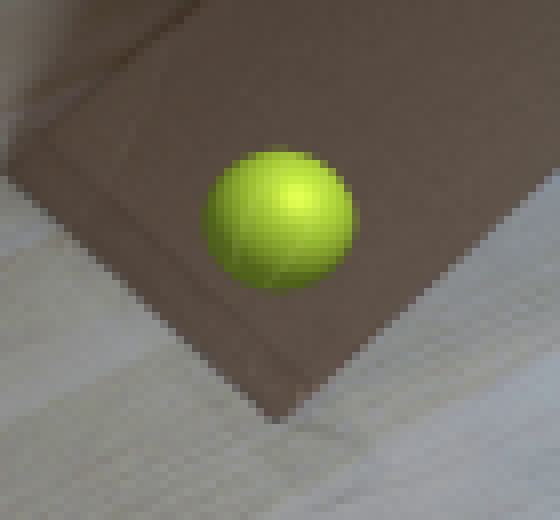
视觉工具实际返回图片 21
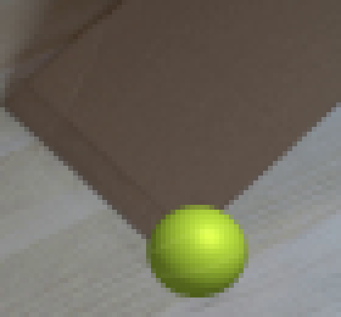
视觉工具实际返回图片 22
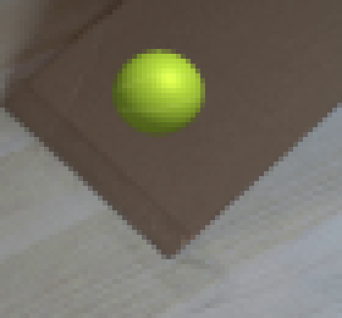
视觉工具实际返回图片 23
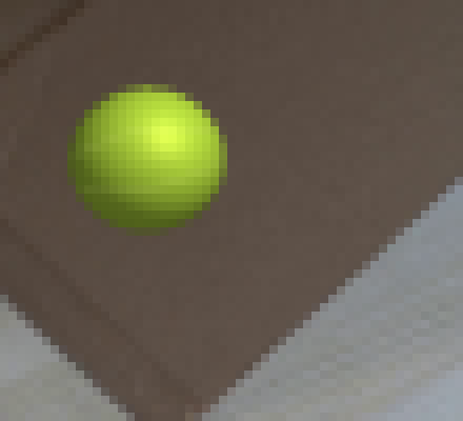
视觉工具实际返回图片 24
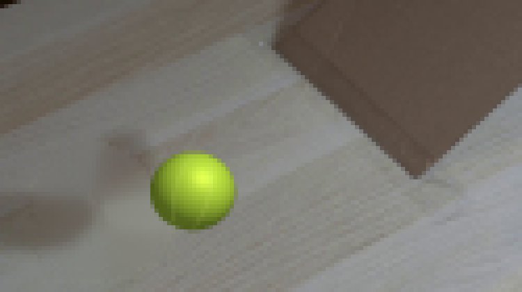
视觉工具实际返回图片 25
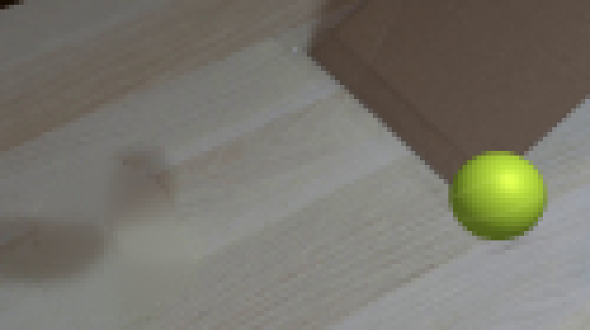
视觉工具实际返回图片 26
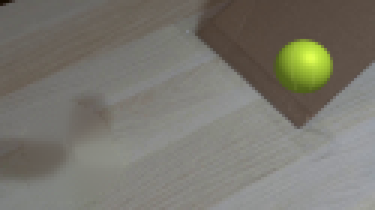
视觉工具实际返回图片 27
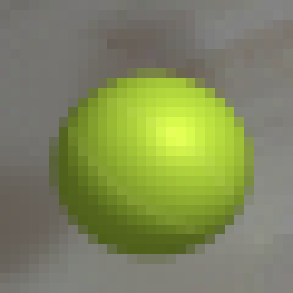
视觉工具实际返回图片 28
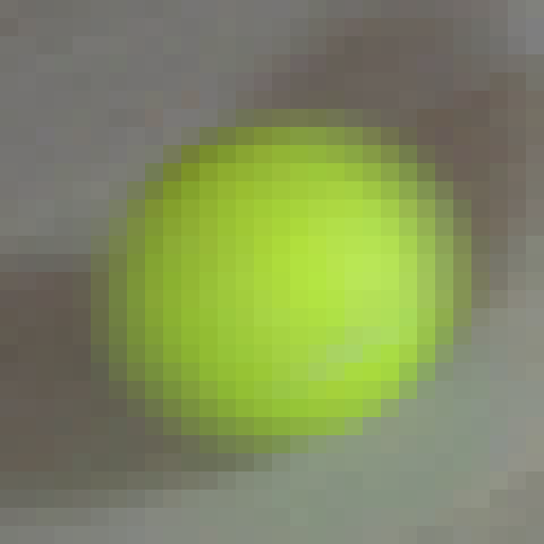
视觉工具实际返回图片 29
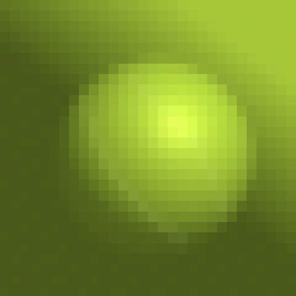
视觉工具实际返回图片 30
视觉工具实际返回图片 31
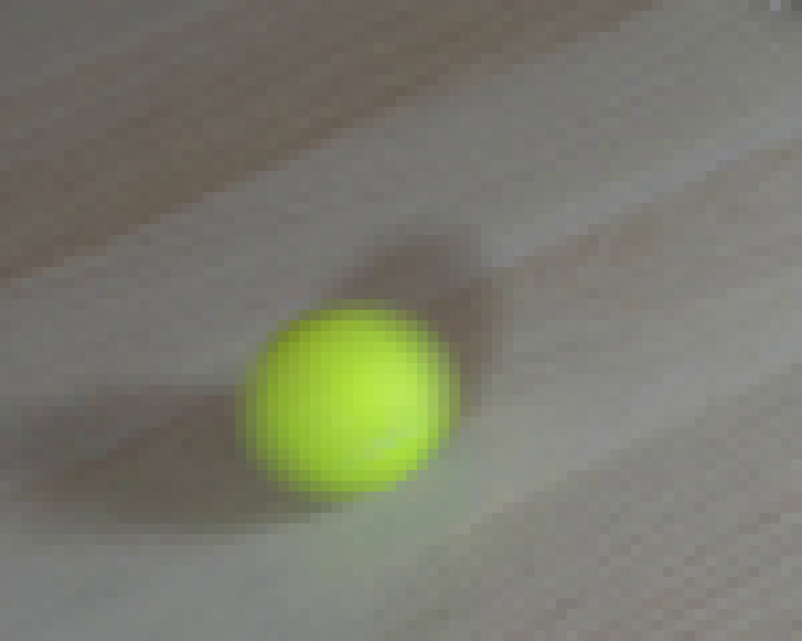
保存候选 3 份；完成命令 45 次；可验证图片返回 31 张。原始 API 响应与完整日志保留在本地。